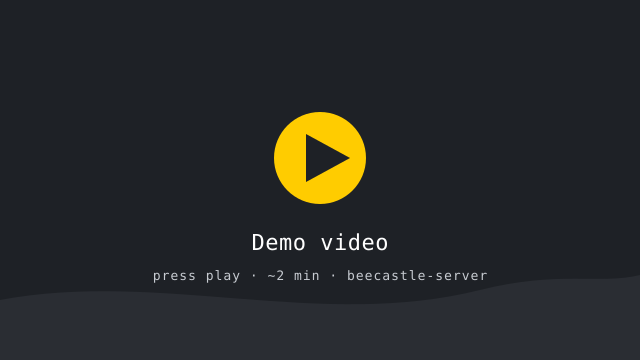
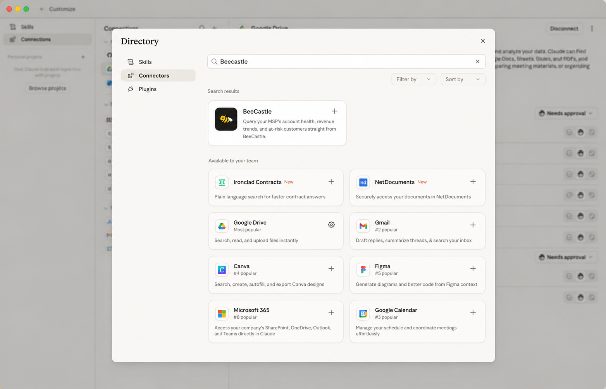
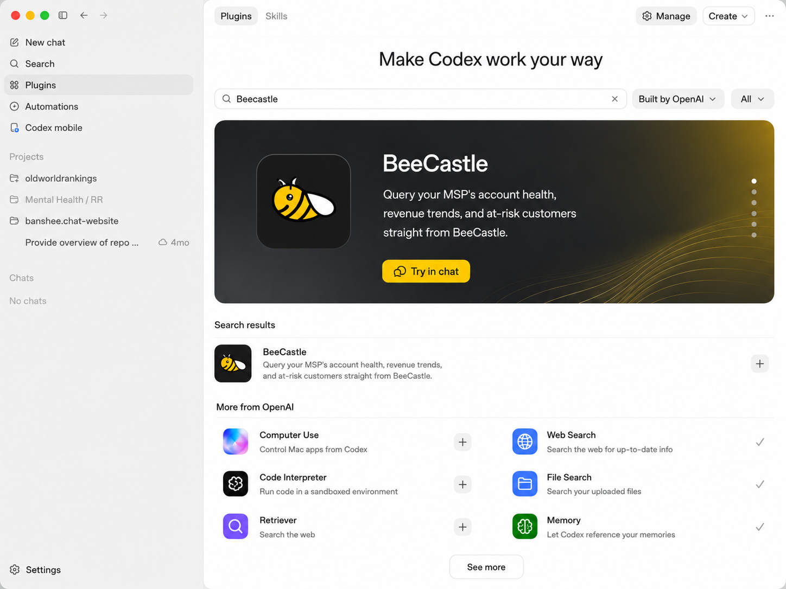

Rewrite Proposal · May 2026
Retire an eleven-repo, event-sourced sprawl across three languages. Re-ship BeeCastle as the account intelligence layer for MSPs — live M365 + ConnectWise data, real health scores, and a customer's AI agent answering "which clients need attention?" — inside a single MVP cycle.
The case
Eight years of accretion across eleven repos and a private event-sourcing layer almost nobody else maintains. Every new feature pays a tax against that surface.
Across 11 repos · 5,295 files · 7,400+ commits since May 2018.
beecastle-web alone is 220K LOC; bc-notifications another 66K — behaviour nobody wrote a spec for.
COCOMO estimate for the retired surface — ~30 person-years, ~35 months. The accumulated liability, not a quote.
The architecture
Eleven repos glued together by a bespoke event-sourcing bus nobody else runs. The rewrite is mostly a modern monolith — cloud-native only where it earns it.
Where the pain goes
Not engineering nice-to-haves — these are the outages, dropped syncs and midnight data-fixes hitting your customers and your support team today. The rewrite designs the whole class out, it doesn't patch it.
Legacy CW/Halo changes just don't appear — Landmark products, VITG/Ultra resyncs, "data not loading." Found when the customer complains.
✓ Now durable SQS ingest + idempotent normalizers + retries — every change lands, or dead-letters loudly.
Legacy Blue Arc renamed Gold SLA→MSA — old names kept showing; "product stack disappeared."
✓ Now one source of truth in Postgres, written on change — no projection lag, no ghost data.
Legacy Landmark/Ultra revenue discrepancies, empty sales sections, NFP zero-price edge cases.
✓ Now invoice→revenue normalizers, deterministic and test-covered against real data.
Legacy Danet looked dead — a stray restrictFinancialViews filter + duplicate user. Users can't invite / log in / connect M365.
✓ Now Better Auth + Postgres RLS — visibility is a database rule, not a fragile query filter.
Legacy the fill-hot-cache cron stacking parallel COLLSCANs on 6.3M interactions; "Oops, we can't load this page."
✓ Now indexed Postgres + bounded, re-entrant jobs — no scan-storm crons.
Legacy every CW→Halo move (Turrito, Dial a Nerd) = manual dedupe via 614 scripts & 36 case folders.
✓ Now idempotent upserts keyed on external IDs + an audit trail — re-syncs converge, they don't duplicate.
De-risked before the ask
Before asking you to commit, we built spikes against the parts that actually carry risk — multi-tenant isolation, live PSA sync, the two-org demo posture. The point wasn't to deliver scope. It was to prove the hard parts work.
Exploratory build across the risk areas.
The rest is on us — proof before the ask.
Every risk area came back positive.
Proof, not a promise
The spike isn't a diagram. This is the running app — multi-tenant, real ConnectWise data, admin + impersonation — recorded end to end.

60–90 seconds, no edits. Proof the approach works — the full build scope still follows in its own right.
Scope, sized
Not open-ended. ~200 hours of build (~250 with contingency) across five workstreams — the complete scope, independent of the spikes. Here's why it lands faster than that sounds, and how it maps to the milestone dates.
| Workstream | Hours |
|---|---|
| Schema, seeder & scoring engine | ~30 |
| ConnectWise + M365 + SQS pipeline | ~60 |
| Product UI — companies, dashboard, settings, admin | ~45 |
| API + MCP AI surface | ~20 |
| Hardening, tests, deploy, bug-bash | ~45 |
| Build subtotal | ~200 |
| With contingency | ~250 |
≈8 weeks of focused build effort. Delivered part-time across the milestones — M1 Jun 2026, M2 Sep 2026, real customer live ~Nov 2026 (slide 12). Effort weeks ≠ calendar weeks; the dates are what we commit to.
The MVP
One real customer org on live M365 + ConnectWise data, alongside the BeeCastle org seeded with realistic mock data. Same UI, same queries — sales conversations look populated from day one.
Tier · score · revenue · last contact
Overview + interactions timeline
Health bands + activity feed
Connect / disconnect / status
Out of MVP scope — Stripe billing, Mongo data migration, whitespace classifier, full Sales dashboard, opportunity editing, LLM sentiment enrichment, outbound notifications. All post-MVP.
Two birds, one stone
The rebuild ships the product today's users expect — a clean, fast app: dashboards, subscriptions, email alerts. That alone stops the churn and keeps the base. The strategic strength is the same data, natively available inside the AI tools your team already uses — Claude, Codex, ChatGPT. One rebuild, both payoffs.


What it feels like in practice
Illustrative — one account-management flow: ask, act, then expand, all inside the assistant the AM already uses. It doesn't just answer — it drafts, reminds, and tells you what not to do.
Here's the renewal-risk picture:
metric value trend ──────────── ───────────── ─────────── Health score 58 / 100 ↓ 13 (30d) Revenue (MRR) $6,200 flat · 6 mo Renewal in 41 days — Last touch billing query unresolved
Recommended call plan: resolve billing first, confirm the renewal owner, bring uptime/value numbers. Don't lead with upsell.
Done — reminder set for 9:00am. Draft ready:
There is whitespace — automation and executive reporting. But don't lead with it. Ask this instead:
Mock conversation, real tool names. It reads the account, acts (reminder + email), and coaches the judgement call — that's the product, not a dashboard.
You've seen the what & why
Milestones, money, and the decision — laid out plainly.
Delivery & payment
Each has a date and a clear trigger. BeeCastle pays the first two ($20K + $20K); the third is cloud-funded; the fourth is a growth share — it only pays if the rebuild actually wins new clients. Two of four cost BeeCastle budget.
Engagement kicks off. Schema, seeder, hardened spikes. Never out-of-pocket beyond this without deliverables.
Real customer live on M365 + ConnectWise data, scored. You can start bringing customers on.
MVP in daily use, AI surface live, old stack decommissioned. Paid from cloud savings + freed legacy spend.
For clients onboarded in this window, 50% of their net-new MRR for that client's first 6 months — then 100% to BeeCastle. Paid from new revenue, not budget.
Build kicks off on the de-risked foundation. Demo: the BeeCastle mock org, every screen populated.
Real customer data flowing + scored. Demo: send an email, refresh, watch the score and feed move.
MVP in daily use, AI surface live, legacy decommissioned. Funded by verified cloud savings — next slide.
50% of net-new MRR from clients onboarded in the window, each for their first 6 months. Pays only if growth lands.
How Milestone 3 funds itself
Retiring the legacy stack erases its AWS + Mongo bill; the new stack runs for a fraction. Milestone 3 is funded from that gap — it pays out 70% of the verified saving over the first six months post go-live, vs the locked baseline. No saving, no M3. (Baseline is USD — the cloud invoices are; fixed fees are AUD.)
Last 6 months visible in Cost Explorer: US$19,914.05 total, US$3,319.01/month average.
Last 6 completed invoice periods visible: US$9,666.39 total, US$1,611.07/month average.
Six-month AWS + Mongo run-rate before replacement infra is netted out.
| Old run-rate (US$4,930 @ ~1.5) | ~A$7.4K/mo |
| Less new run-rate | ~A$2.0K/mo |
| Verified monthly saving | ~A$5.4K/mo |
| Funds Milestone 3 | 70% × 6 months |
Estimated all-in replacement run-rate < ~A$2K/mo (hosting + DB + compute) — even with Google Workspace and a per-client test org on top of prod. LLM/AI compute runs on customers' own keys, so it never enters our run-rate. Measured from billing exports; success fee converts to AUD at payment time.
Cut the combined run-rate ~70% → six-month verified saving ≈ A$32K est.
At 70%, Milestone 3 ≈ A$23K est. — paid from that saving, not the operating budget.
~A$10K stays with BeeCastle in the 6-month window, then 100% of the saving after.
The ask — and the payback
BeeCastle's real exposure is $20K, not $40K. The second $20K is paid only once a real client can be onboarded (M2) — no working milestone, no payment. Milestone 3 (≈A$23K, my 70% of cloud savings, Nov 26–May 27) is funded by the savings; the $40K is clawed back by ~Nov 2027, pure profit after. M4 shares new-client revenue — upside only.
Build starts on the de-risked foundation. Running total: $20K.
Contingent on a working M2 — no demo, no payment. Running total: $40K, the entire fixed cash.
My 70% of cloud savings over 6 months — BeeCastle pays less than the old bill from day one. All-in ≈ A$63K.
| Old hosting — gone | ~A$7.4K |
| New run-rate | ~A$2.0K |
| Monthly saving | ~A$5.4K |
First 6 months the saving is split — my Milestone 3 = 70% (≈A$23K); BeeCastle keeps 30% and is still ahead of the old bill from day one. After that BeeCastle keeps 100% (~A$65K/yr). The $40K is repaid from savings within ~12 months of go-live — clear profit after.
1.5% common stock, earned over 2 years — nothing for the first 6 months, then it accrues monthly. Leave early, keep only what's vested. Alignment, not an extra cash ask.
~May–Nov 2027: 50% of net-new MRR from clients onboarded then, each for their first 6 months — then 100% to BeeCastle. Variable: it pays only if the rebuild wins clients. New revenue, never budget.
AUD est.; cloud invoices are USD, converted ~1.5. Savings depend on the locked baseline and final run-rate — planning figures, measured from billing exports, not a guarantee.
The decision
The spikes proved the hard parts. The architecture is decided. Sign now → real customer live by ~November 2026 (≈8 weeks of build, delivered across the milestones). It's a yes or a no.
Sign off the MVP scope as the deliverable list — the demo we ship toward.
$20K signing + $20K clients-live. Milestone 3 cloud-funded. 1.5% equity sliver.
A one-page scope-of-work that references this deck verbatim. No surprises.